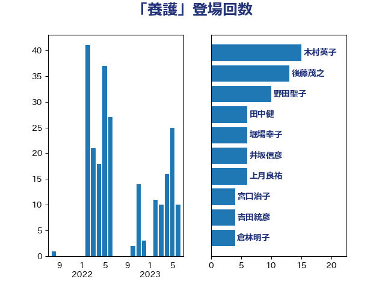

単語「養護」

| 吉田統彦 | 立憲民主党 | 16 回 |
| 後藤茂之 | 自由民主党 | 13 回 |
| 野田聖子 | 自由民主党 | 10 回 |
| 音喜多駿 | 日本維新の会 | 7 回 |
| 上月良祐 | 自由民主党 | 6 回 |
| 井坂信彦 | 立憲民主党 | 6 回 |
| 倉林明子 | 日本共産党 | 6 回 |
| 國重徹 | 公明党 | 6 回 |
| 田村憲久 | 自由民主党 | 6 回 |
| 宮口治子 | 立憲民主党 | 4 回 |
| 山下芳生 | 日本共産党 | 4 回 |
| 梅村みずほ | 日本維新の会 | 4 回 |
| 田中健 | 国民民主党 | 4 回 |
| 山本香苗 | 公明党 | 3 回 |
| 高階恵美子 | 自由民主党 | 3 回 |
| 宮本徹 | 日本共産党 | 2 回 |
| 山田太郎 | 自由民主党 | 2 回 |
| 岩渕友 | 日本共産党 | 2 回 |
| 杉久武 | 公明党 | 2 回 |
| 東徹 | 日本維新の会 | 2 回 |
| 湯原俊二 | 立憲民主党 | 2 回 |
| 石井章 | 日本維新の会 | 2 回 |
| 自見はなこ | 自由民主党 | 2 回 |
| 萩生田光一 | 自由民主党 | 2 回 |
| 西村康稔 | 自由民主党 | 2 回 |
| 赤羽一嘉 | 公明党 | 2 回 |
| 馬場成志 | 自由民主党 | 2 回 |
| 中谷一馬 | 立憲民主党 | 1 回 |
| 中谷真一 | 自由民主党 | 1 回 |
| 吉田宣弘 | 公明党 | 1 回 |
| 城井崇 | 立憲民主党 | 1 回 |
| 堀場幸子 | 日本維新の会 | 1 回 |
| 大口善徳 | 公明党 | 1 回 |
| 大塚耕平 | 国民民主党 | 1 回 |
| 室井邦彦 | 日本維新の会 | 1 回 |
| 小寺裕雄 | 自由民主党 | 1 回 |
| 打越さく良 | 立憲民主党 | 1 回 |
| 日下正喜 | 公明党 | 1 回 |
| 杉本和巳 | 日本維新の会 | 1 回 |
| 柴田巧 | 日本維新の会 | 1 回 |
| 柿沢未途 | 無所属 | 1 回 |
| 梅村聡 | 日本維新の会 | 1 回 |
| 橋本岳 | 自由民主党 | 1 回 |
| 田村智子 | 日本共産党 | 1 回 |
| 矢倉克夫 | 公明党 | 1 回 |
| 福岡資麿 | 自由民主党 | 1 回 |
| 竹谷とし子 | 公明党 | 1 回 |
| 西岡秀子 | 国民民主党 | 1 回 |
| 遠藤良太 | 日本維新の会 | 1 回 |
| 長峯誠 | 自由民主党 | 1 回 |
| 高橋千鶴子 | 日本共産党 | 1 回 |
| 高良鉄美 | 無所属 | 1 回 |